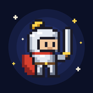

WORDPIXEL
5000 самых частых английских слов.
Бесплатно, без рекламы, без интернета.
Android
Скачать для Android- Нажми кнопку выше и открой скачанный файл WORDPIXEL.apk.
- Телефон спросит, можно ли ставить приложения из этого места — нажми «Настройки» и включи «Разрешить из этого источника», потом вернись назад.
- Нажми «Установить». Если Google предупредит, что приложение неизвестное, выбери «Всё равно установить» — его просто нет в Google Play.
- На экране появится иконка с рыцарем — открывай её.
Новая версия ставится так же — поверх старой. Прогресс при этом сохраняется.
iPhone
Открыть приложение- Открой эту страницу именно в Safari (не в Chrome и не внутри Telegram) и нажми кнопку выше.
- Внизу нажми «Поделиться» — квадрат со стрелкой вверх.
- Пролистай вниз и выбери «На экран «Домой»», затем «Добавить».
- Открывай приложение с иконки рыцаря на экране — оно запустится на весь экран.
После первого запуска интернет не нужен. Новые версии приходят сами, когда приложение открыто с интернетом.
- Прогресс хранится только в твоём телефоне. Раз в неделю сохраняй его в файл: «Настройки» → «Сохранить прогресс в файл». С этим файлом можно продолжить на другом телефоне.
- По умолчанию 20 новых слов в день — около 10–12 минут. Темп меняется в настройках.
- Уровни открываются по порядку, звёзды показывают, сколько слов уровня уже выучено.